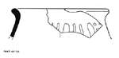
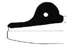
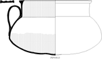
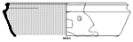

{kind=link}
{kind=link}
{kind=link}
{kind=link}

{kind=link}
{kind=link}
{kind=link}
{kind=link}

{kind=link}
{kind=link}
{kind=link}

The large and diverse ceramic assemblage at Psalmodi contains an almost continuous sequence from Late Antiquity to the present. Unlike the Late Ancient ceramics, which can mostly be assigned to well-known categories with standard typologies, the study of the medieval and modern ceramics has required creation of a classification system.
The presentation here makes use of the current version of the Psalmodi classification for medieval and modern pottery, but the classification remains preliminary and subject to major revisions. Statements regarding date and place of origin should likewise be considered possibly subject to revision.
We are grateful to Claude Raynaud, Marie Leenhardt, and Lucy Vallauri, who have offered advice and allowed us to compare our ceramics to other sites in the region; without their assistance our work would have made much less progress than it has.
The thumbnail illustrations on this page are linked to larger images that are at 1:1 scale when viewed on a monitor with 72 dpi resolution.
When Psalmodi was excavated in the 1970s and 1980s, it was impossible to say much about the early medieval occupation on the basis of ceramic evidence, because so little was known about the pottery of that period. The first synthesis to put the study of early medieval pottery in the region on a firm basis was published by the CATHMA group in 1993 in the journal Archéologie du Midi Médiéval. Subsequent publication of various sites in the region has reinforced the conclusions of that work and has also added important new details for chronology and classification.
Although several important architectural features dating to this period have been excavated at Psalmodi, relatively little pottery has been found. Stratified contexts of this period are limited and generally contain few finds. It is not clear to what degree this is the result of a limited material assemblage and to what degree it reflects the use of other, unexcavated parts of the site for trash deposition.
For an example of the quantification of one deposit of this period, see Early Medieval Wall Fill.
| Gray kaolinitic ware, form Kaol A28, 7th c. | |
| Gray kaolinitic ware, form unclassified, 7th c.? | |
| Gray kaolinitic ware, form unclassified, 7th c.? | |
| Gray kaolinitic ware, form cf. CATHMA 12?, 7th-8th c. | |
| Gray kaolinitic ware, form CATHMA 7a, 8th c. |
| Black ware, form CATHMA 2, 8th-10th c. | |
| Light painted ware, form cf. CATHMA 3, 9th c. | |
|  | Soft gray ware with pattern-burnishing, form CATHMA 2a, 9th-11th c. |
| Coarse gray ware, form CATHMA 2a, early-mid medieval? | |
| Gray kaolinitic ware, form CATHMA 3, 9th-12th c.? |
| Gray kaolinitic ware, form CATHMA 5a, 10th-12th c.? | |
|  | Horn in soft pink fabric, mid medieval. |
| Fine red ware with pattern burnishing, form CATHMA 3, 10th-12th c.? | |
| Fine red ware, jug with ring handle and two spouts, 11th-12th c.? |
| Cruche with bec ponté, form CATHMA 2a, 11th-12th c.? | |
| Gray kaolinitic ware, large pot with rouletted decoration, 13th c. |
After the relative scarcity of ceramic deposits in the early and mid medieval periods, finds from the late Middle Ages are again abundant. The evidence can be interpreted as corroborating the picture of Psalmodi's economic decline in the late Middle Ages. Although regional ceramics are abundant, imports are scarce compared to many other sites.
For an example of the quantification of a deposit mainly of this period (but with some modern disturbance), see Late Medieval and Early Modern Destruction Level.
| Coarse red ware with green glaze, early 13th century. | |
|  | Light kaolinitic pot, 14th century. |
 | Light kaolinitic pot, 14th century. |
| Light kaolinitic pot, 14th-15th century. | |
|  | Light kaolinitic jatte, 14th century. |
| Cruche with monochrome green tin glaze, 14th century. | |
| Cruche with copper and manganese decoration, Avignon style, 14th century. | |
 | Rim of plate with copper and manganese decoration, Catalunya, 14th century. |
| Light kaolinitic pot with sparse glaze producing golden apparent surface color, 14th-15th century. | |
| Valencian lusterware albarello, 14th-15th century. | |
| Graffita a stecca, Pisa, 15th-16th century |
Although the research at Psalmodi has concentrated on the medieval monastery, the subsequent establishment of a farm on the site left important modern deposits in some of the excavated areas. These deposits provide a wealth of evidence for changing patterns of ceramic use as rural southern France became incorporated into the modern world-economy between the seventeenth and nineteenth centuries. It is interesting to note that, despite the importance of Dutch and English trade in the Mediterranean during the 17th to 19th centuries, the major ceramic wares of the early modern Atlantic economy - delftwares, Rhenish stonewares, English creamwares and pearlwares - are absent from this assemblage. Instead, the assemblage appears to consist almost entirely of regional products, with a few Italian imports. The assemblage shows the development of a rural domestic assemblage through the modern era into the middle of the twentieth century, as the functions of ceramics became more limited and therefore also more specialized.
{kind=link}
{kind=link}
{kind=link}
{kind=link}
{kind=link}
{kind=link}
{kind=link}
{kind=link}
{kind=link}
{kind=link}
{kind=link}
{kind=link}
{kind=link}
{kind=link}
{kind=link}
{kind=link}
{kind=link}